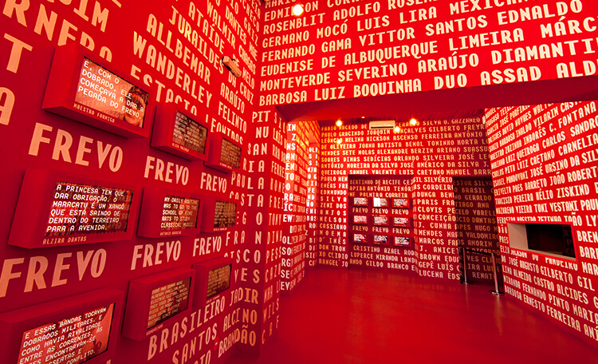

Praça do Frevo
A Praça do Arsenal concentra duas atrações de Recife cuja visita recomendo. Desde logo, o Paço do Frevo, um espaço cultural “dedicado à difusão, pesquisa, lazer e formação nas áreas da dança e música do frevo, visando propagar a sua prática para as futuras gerações”. E que lança um desafio: “experimentar o Carnaval pernambucano durante o ano todo”. Isto porque o frevo, reconhecido pela UNESCO como Património Imaterial da Humanidade, é o principal ritmo a animar o Carnaval no Estado de Pernambuco; incluindo naturalmente as cidades de Recife e Olinda. Ora, mesmo não tendo dançado frevo, não dei por mal empregado o tempo a percorrer as diferentes salas do Paço do Frevo, em Recife Antigo. Ainda para mais porque a entrada foi franqueada sem custos. Logo ao lado fica a outra atração da Praça do Arsenal a visitar sem reservas: o Teatro Mamulengo.
Parque das Esculturas Francisco Brennand

Instalado no estuário do Porto do Recife, defronte do Marco Zero, o Parque das Esculturas Francisco Brennand foi construído no ano 2000 como marco comemorativo dos 500 anos do Descobrimento do Brasil. É quase uma centena de esculturas do artista pernambucano Francisco Brennand, acessíveis de barco a partir do pequeno cais no Marco Zero. É, digamos, uma instalação algo insólita, que vale pelo simbolismo e criatividade. Fica a dica.